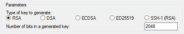

Setting Up with Amazon EC2
If you've already signed up for Amazon Web Services (AWS), you can start using Amazon EC2 immediately. You can open the Amazon EC2 console, choose Launch Instance, and follow the steps in the launch wizard to launch your first instance.
If you haven't signed up for AWS yet, or if you need assistance launching your first instance, complete the following tasks to get set up to use Amazon EC2:
Sign Up for AWS
When you sign up for Amazon Web Services (AWS), your AWS account is automatically signed up for all services in AWS, including Amazon EC2. You are charged only for the services that you use.
With Amazon EC2, you pay only for what you use. If you are a new AWS customer, you can get started with Amazon EC2 for free. For more information, see AWS Free Tier.
If you have an AWS account already, skip to the next task. If you don't have an AWS account, use the following procedure to create one.
To create an AWS account
-
Open https://aws.amazon.com/, and then choose Create an AWS Account.
Note
This might be unavailable in your browser if you previously signed into the AWS Management Console. In that case, choose Sign in to a different account, and then choose Create a new AWS account.
-
Follow the online instructions.
Part of the sign-up procedure involves receiving a phone call and entering a PIN using the phone keypad.
Note your AWS account number, because you'll need it for the next task.
Create an IAM User
Services in AWS, such as Amazon EC2, require that you provide credentials when you access them, so that the service can determine whether you have permission to access its resources. The console requires your password. You can create access keys for your AWS account to access the command line interface or API. However, we don't recommend that you access AWS using the credentials for your AWS account; we recommend that you use AWS Identity and Access Management (IAM) instead. Create an IAM user, and then add the user to an IAM group with administrative permissions or grant this user administrative permissions. You can then access AWS using a special URL and the credentials for the IAM user.
If you signed up for AWS but have not created an IAM user for yourself, you can create one using the IAM console. If you aren't familiar with using the console, see Working with the AWS Management Console for an overview.
To create an IAM user for yourself and add the user to an Administrators group
-
Use your AWS account email address and password to sign in as the AWS account root user to the IAM console at https://console.aws.amazon.com/iam/.
Note
We strongly recommend that you adhere to the best practice of using the
AdministratorIAM user below and securely lock away the root user credentials. Sign in as the root user only to perform a few account and service management tasks. -
In the navigation pane of the console, choose Users, and then choose Add user.
-
For User name, type
Administrator. -
Select the check box next to AWS Management Console access, select Custom password, and then type the new user's password in the text box. You can optionally select Require password reset to force the user to create a new password the next time the user signs in.
-
Choose Next: Permissions.
-
On the Set permissions page, choose Add user to group.
-
Choose Create group.
-
In the Create group dialog box, for Group name type
Administrators. -
For Filter policies, select the check box for AWS managed - job function.
-
In the policy list, select the check box for AdministratorAccess. Then choose Create group.
-
Back in the list of groups, select the check box for your new group. Choose Refresh if necessary to see the group in the list.
-
Choose Next: Review to see the list of group memberships to be added to the new user. When you are ready to proceed, choose Create user.
You can use this same process to create more groups and users, and to give your users access to your AWS account resources. To learn about using policies to restrict users' permissions to specific AWS resources, go to Access Management and Example Policies.
To sign in as this new IAM user, sign out of the AWS console, then use the following
URL, where your_aws_account_id is your AWS account number without
the hyphens (for example, if your AWS account number is 1234-5678-9012, your AWS account ID is 123456789012):
https://your_aws_account_id.signin.aws.amazon.com/console/
Enter the IAM user name (not your email address) and password that you just created. When you're signed in, the navigation bar displays "your_user_name @ your_aws_account_id".
If you don't want the URL for your sign-in page to contain your AWS account ID, you can create an account alias. From the IAM console, choose Dashboard in the navigation pane. From the dashboard, choose Customize and enter an alias such as your company name. To sign in after you create an account alias, use the following URL:
https://your_account_alias.signin.aws.amazon.com/console/
To verify the sign-in link for IAM users for your account, open the IAM console and check under IAM users sign-in link on the dashboard.
For more information about IAM, see IAM and Amazon EC2.
Create a Key Pair
AWS uses public-key cryptography to secure the login information for your instance. A Linux instance has no password; you use a key pair to log in to your instance securely. You specify the name of the key pair when you launch your instance, then provide the private key when you log in using SSH.
If you haven't created a key pair already, you can create one using the Amazon EC2 console. Note that if you plan to launch instances in multiple regions, you'll need to create a key pair in each region. For more information about regions, see Regions and Availability Zones.
To create a key pair
-
Sign in to AWS using the URL that you created in the previous section.
-
From the AWS dashboard, choose EC2 to open the Amazon EC2 console.
-
From the navigation bar, select a region for the key pair. You can select any region that's available to you, regardless of your location. However, key pairs are specific to a region; for example, if you plan to launch an instance in the US East (Ohio) Region, you must create a key pair for the instance in the US East (Ohio) Region.

-
In the navigation pane, under NETWORK & SECURITY, choose Key Pairs.
Tip
The navigation pane is on the left side of the console. If you do not see the pane, it might be minimized; choose the arrow to expand the pane. You may have to scroll down to see the Key Pairs link.
-
Choose Create Key Pair.
-
Enter a name for the new key pair in the Key pair name field of the Create Key Pair dialog box, and then choose Create. Use a name that is easy for you to remember, such as your IAM user name, followed by
-key-pair, plus the region name. For example, me-key-pair-useast2. -
The private key file is automatically downloaded by your browser. The base file name is the name you specified as the name of your key pair, and the file name extension is
.pem. Save the private key file in a safe place.Important
This is the only chance for you to save the private key file. You'll need to provide the name of your key pair when you launch an instance and the corresponding private key each time you connect to the instance.
-
If you will use an SSH client on a Mac or Linux computer to connect to your Linux instance, use the following command to set the permissions of your private key file so that only you can read it.
chmod 400your_user_name-key-pair-region_name.pemIf you do not set these permissions, then you cannot connect to your instance using this key pair. For more information, see Error: Unprotected Private Key File.
For more information, see Amazon EC2 Key Pairs.
To connect to your instance using your key pair
To connect to your Linux instance from a computer running Mac or Linux, you'll specify
the
.pem file to your SSH client with the -i
option and the path to your private key. To connect to your Linux instance from
a
computer running Windows, you can use either MindTerm or PuTTY. If you plan to
use
PuTTY, you'll need to install it and use the following procedure to convert the
.pem file to a .ppk file.
(Optional) To prepare to connect to a Linux instance from Windows using PuTTY
-
Download and install PuTTY from http://www.chiark.greenend.org.uk/~sgtatham/putty/. Be sure to install the entire suite.
-
Start PuTTYgen (for example, from the Start menu, choose All Programs > PuTTY > PuTTYgen).
-
Under Type of key to generate, choose RSA.
 -
Choose Load. By default, PuTTYgen displays only files with the extension
.ppk. To locate your.pemfile, select the option to display files of all types.
-
Select the private key file that you created in the previous procedure and choose Open. Choose OK to dismiss the confirmation dialog box.
-
Choose Save private key. PuTTYgen displays a warning about saving the key without a passphrase. Choose Yes.
-
Specify the same name for the key that you used for the key pair. PuTTY automatically adds the
.ppkfile extension.
Create a Virtual Private Cloud (VPC)
Amazon VPC enables you to launch AWS resources into a virtual network that you've defined, known as a virtual private cloud (VPC). The newer EC2 instance types require that you launch your instances in a VPC. If you have a default VPC, you can skip this section and move to the next task, Create a Security Group. To determine whether you have a default VPC, open the Amazon EC2 console and look for Default VPC under Account Attributes on the dashboard. If you do not have a default VPC listed on the dashboard, you can create a nondefault VPC using the steps below.
To create a nondefault VPC
-
Open the Amazon VPC console at https://console.aws.amazon.com/vpc/.
-
From the navigation bar, select a region for the VPC. VPCs are specific to a region, so you should select the same region in which you created your key pair.
-
On the VPC dashboard, choose Launch VPC Wizard.
-
On the Step 1: Select a VPC Configuration page, ensure that VPC with a Single Public Subnet is selected, and choose Select.
-
On the Step 2: VPC with a Single Public Subnet page, enter a friendly name for your VPC in the VPC name field. Leave the other default configuration settings, and choose Create VPC. On the confirmation page, choose OK.
For more information about VPCs, see the Amazon VPC User Guide.
Create a Security Group
Security groups act as a firewall for associated instances, controlling both inbound and outbound traffic at the instance level. You must add rules to a security group that enable you to connect to your instance from your IP address using SSH. You can also add rules that allow inbound and outbound HTTP and HTTPS access from anywhere.
Note that if you plan to launch instances in multiple regions, you'll need to create a security group in each region. For more information about regions, see Regions and Availability Zones.
Prerequisites
You'll need the public IPv4 address of your local computer. The security group editor in the Amazon EC2 console can automatically detect the public IPv4 address for you. Alternatively, you can use the search phrase "what is my IP address" in an Internet browser, or use the following service: Check IP. If you are connecting through an Internet service provider (ISP) or from behind a firewall without a static IP address, you need to find out the range of IP addresses used by client computers.
To create a security group with least privilege
-
Open the Amazon EC2 console at https://console.aws.amazon.com/ec2/.
Tip
Alternatively, you can use the Amazon VPC console to create a security group. However, the instructions in this procedure don't match the Amazon VPC console. Therefore, if you switched to the Amazon VPC console in the previous section, either switch back to the Amazon EC2 console and use these instructions, or use the instructions in Set Up a Security Group for Your VPC in the Amazon VPC Getting Started Guide.
-
From the navigation bar, select a region for the security group. Security groups are specific to a region, so you should select the same region in which you created your key pair.
-
Choose Security Groups in the navigation pane.
-
Choose Create Security Group.
-
Enter a name for the new security group and a description. Use a name that is easy for you to remember, such as your IAM user name, followed by _SG_, plus the region name. For example, me_SG_uswest2.
-
In the VPC list, select your VPC. If you have a default VPC, it's the one that is marked with an asterisk (*).
-
On the Inbound tab, create the following rules (choose Add Rule for each new rule), and then choose Create:
-
Choose HTTP from the Type list, and make sure that Source is set to Anywhere (
0.0.0.0/0). -
Choose HTTPS from the Type list, and make sure that Source is set to Anywhere (
0.0.0.0/0). -
Choose SSH from the Type list. In the Source box, choose My IP to automatically populate the field with the public IPv4 address of your local computer. Alternatively, choose Custom and specify the public IPv4 address of your computer or network in CIDR notation. To specify an individual IP address in CIDR notation, add the routing suffix
/32, for example,203.0.113.25/32. If your company allocates addresses from a range, specify the entire range, such as203.0.113.0/24.Warning
For security reasons, we don't recommend that you allow SSH access from all IPv4 addresses (
0.0.0.0/0) to your instance, except for testing purposes and only for a short time.
-
For more information, see Amazon EC2 Security Groups for Linux Instances.